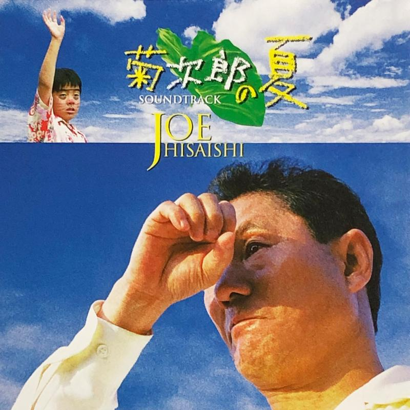

Zine#50
博客宣言、AI 對个人网站的冲击、not be a prick
🎵 Summer - 久石譲
{kind=link}

儿童節快樂 σ(´∀｀*)
News | Article
Web Weekly #193 by Stefan Judis
前阵子，一個關注的博客清空了网站上的內容，宣布暂时离线，原因是收入缩减以及 AI 抓取导致的托管成本增加。 Web Weekly 的作者也观察到他的网站流量一直在下降，人們更多地在聊天框里获取信息，越來越少人訪問网站本身，网絡上也越來越多充斥着 AI 生成的內容。像是 Google 這樣的公司還計畫 减少搜索頁的鏈接，替換成一个聊天框，进一步惡化了現状。
我的博客目前倒是影响不大，本來流量也不多，AI 似乎也没怎么爬我的网站，如果因為 AI 爬取导致維护成本很高，到時再想辦法應對。可以預想的是，未來博客会越來越难曝光，更难收获到新的讀者。還是会繼續寫的，有人看固然重要，也開心，但寫博客也不仅是為了給讀者看，整理思緒、搗鼓格式和樣式也是喜歡的。
像 Stefan 說的，重要的是去在意，去關心，不管是作者還是讀者，一个人的选择或許渺小，但正是一个个人的选择，决定了未來的去向。
互联网从未被承诺是开放、免费或可修改的。它诞生于美国军方，并受到多家私营公司的追捧，本可以轻易地被单一实体据为己有。然而，许多勇敢的人挺身而出，为保持它的全民开放而奋斗，使其由众人共同维护，不为任何人私有。
我们可以一起一砖一瓦地塑造这些互联网。我们可以建造属于自己的公园、咖啡馆、杂货店、瀑布和山脉。我们不仅是以用户的身份，更是以守护者的身份去照料它们，为子孙后代守护这个家园。
这些互联网不会是逃避现实世界的避难所。我们会回到线下，去亲近自然，与朋友聚会，然后再回到线上，与远在天边的朋友和陌生人邂逅，共度短暂的时光。一生一次，一期一会。
The Internet has no benches by Spencer Chang
Personal blogging by Marc Jenkins
在网上拥有一个属于自己的空间会帯來一种释放感，这个空间不依附于任何公司的算法或商业模式。你可以随心所欲地使用它，你也应该这样做。
个人博客更有可能与有趣的人产生有趣的对话。对我来说，这就是在网络上拥有自己小小角落的美妙之处。
Writing, Riffs & Relationships by Tom Critchlow
忘掉「曝光量」吧。博客的单位不是浏览量，而是对话。
The Blogger’s Manifesto by HAPPILY IMPERFECT
作者回頋了自己寫博客的历程，并寫下了一份博客宣言。
博客宣言
写作是为了理解事物，而不是为了博取眼球；始终选择清晰与深度，而非喧嚣与速度。
在分享时保持真实，不躲在人设背后，也不刻意修饰棱角。努力保留所写之事的真相，如果你说的不是真心话，那最好保持沉默。
关注微小的细节 —— 事物的触感、大多数人错过的微小瞬间、石缝中开花的杂草 —— 这才是真正产生共鸣的地方。
创作吧，别等待！你不需要得到许可才能写作，也不应为了追求完美而迟迟不发布。完成且真诚的作品，永远比完美却无人问津的作品更有意义。
尊重读者，让每一个字都有价值；他们的时间很宝贵，所以要让他们觉得物有所值。
允许你的声音随着你的成长而改变，要知道，成长并不是前后不一，它正是意义所在。
不要被数据或指标分心，相反，要把注意力放在你写的东西是否能与某人产生共鸣上，哪怕这种共鸣是无声的。
最后，坚持下去，尤其是在觉得没人在听的时候。因为写博客不是为了被听到，而是因为你有真实的话想说，并且无论如何都选择把它说出来。
喜歡，共勉。
Dear Internet: Read A Little Deeper, It Won’t Hurt You, I Promise by Marty Day
如果我可以向互联网上的各位提一个要求的话：
- 请务必阅读完整故事，而不仅仅是看标题
- 理解故事真正想要表达的内容
- 如果有原始出处 ⸺ 点击进去，阅读那个原始来源
- 分享原始出处
- 如果你找不到原始出处 ⸺ 那可能是在胡扯！
Zine 中的文章如果你感兴趣或存疑，也推薦去閱讀原文 :)
It's 2026 and women are still asked to teach others to think a little bit and not be a prick by Ana Rodrigues
文章是關於女性在职场中受到的歧视、騷扰、不公。
摘录
科技圈女性面临的一大问题是同事的搭讪。而问题往往始于这些同事被拒绝之后。我们不能在幻灯片上赫然写着「拒绝同事追求的女性几乎总是会面临报复」。
我还遭受了女性常遇到的典型不公待遇：例如，如果有人提问而我回答了，他们会默认我的答案是错的。任何来自男性的赞美或鼓励，都会被其他男性评价为「他这么说只是因为你是女人」。
你看，大多数人认为性骚扰只是一个猥琐男把手搭在你肩膀上试图给你按摩。那是人力资源培训幻灯片里配图的样子，对吧？但对我来说，性骚扰更多地表现为报复。
每当我换工作时，总会冒出一批新的未知敌人。没有什么比刚入职时更让人心累的了：当你和一位男同事一起参加入职培训，一切进展顺利，直到他问出那句「你有男朋友吗？」，你就完全知道接下来会发生什么。有一半的情况，他们会立刻收起友善的态度。不再有起码的人文关怀，回答我的问题时也不再掩饰对我的轻蔑。对他们而言，我不是一个能为工作做出贡献的同事，而是一个物件；如果我不是单身，我就毫无价值。这种时候你能向谁求助呢？毕竟，他们是掌握核心代码库、极具价值的「十倍效率开发者」，而人力资源又是那个整天宣称「我们都是幸福一家人」的行政人员。
作者受到的骚扰，一个原因是她是处於弱势的，男性掌握着資源和話語权，行政也不作為。在很多男性主导的公司里，女性都处於這樣的弱势。在內部环境求助无門，可以寻求外部力量，收集証据，用法律保护自己。实在沒辦法大不了离职，远离這个环境（虽然会很不甘，錯不在自己却是自己承受代价，但至少不必再忍受）。
文中說到的报复也很常見，当发生過冲突，或者莫名引起對方不爽，有的人就会一直怀恨在心，处处想着針對對方。
作為男性，要意識到自己的一些行為可能是一種骚扰，保持距离，保持友善，Don't be a prick。是否是个混蛋，我想每个人应該是清楚的，有的人假装不知，那只是明知故犯。如果真的分辨不出，那就去學吧。
-
幸运的是，女儿还愿意敞開心扉，父亲也愿意傾聴和理解，那就还能沟通。
好人未必是好统治者 by 太隐
因为潜规则一旦被写成白纸黑字，性质就变了。它不再只是描述现实，它还在降低后来者跨过那条线的心理门槛。
Prepare your “no” and keep it handy by Derek Sivers
提前寫好一份得體的拒絕說辞，需要時直接复制发送，可以快速拒絕，减少拒絕時的心理負担。
一份得體的拒絕說辞包括：
- 明确的拒絕
- 感激，感謝對方的邀请和重視
- 解释，为了专注于更重要的「是」，对其他一切都说「不」
- 祝好，如果情况只是暂时的，邀请對方以後再来问问
Something’s Rotten in the State of macOS Icon Design by Jim Nielsen
如果把 macOS 多年的图标按時間倒序排列，看起來就像是某个在图标设计方面越来越厉害的人的作品集。最初的图标看着确实更有趣味。
Ad Infinitum by Matthias Ott
Google 原來靠搜索排名、頁面广告获取大量的广告收入，改成聊天框的話，那广告哪去了？那只能是 塞在 LLM 的回答里了。
如果你不想看广告，付費用 Kagi 吧。
If AI can translate instantly, why learn another language? by Olivia Maurice & Mark Antoniou
學習語言本身就是意义所在；翻譯是有信息丟失的，能看懂原文更好；LLM 翻譯也未必准确。
翻译并不等同于参与。学习一门语言意味着理解人们的思维方式、他们的价值观，以及意义是如何受语境和历史塑造的。这种文化素养是通过互动和经验培养出来的。我们无法将其完全外包给那些按需翻译的系统。
I was just performing friendship. Something had to give by Marina Benjamin
如果维持友谊变成一種負担，還是早点摊開說好，對彼此都是好事，坦誠或許没想象中可怕。
任由关系淡去的愧疚感，远不如维持关系带来的缓慢窒息感那样痛苦。
岁时录（二十五） by Chlorine
这里还有一个问题：许多的 88x31 是闪烁的。有的是温和的闪烁，有的则不然。如果说对于普通人，高频闪烁的 GIF 只是不美观或者轻微不适，那对于光敏性癫痫患者，这种闪烁就是危险了。
Web pages do not contain anything that flashes more than three times in any one second period, or the flash is below the general flash and red flash thresholds.
⸺ W3 Success Criterion
如果我们为了多数人的趣味而忽略少数人的安全，那在 a11y 上，88x31 ⸺ 当然，说的是快速闪烁的那些 ⸺ 就是暴政。
确實是一個要注意的問題，我之前的 88x31 也是有些閃，不那麼温和。重新生成了一個靜態的，如果你引用過，还請替換一下，thanks :)
新的 88x31 的 HTML 片段
<a href="https://taxodium.ink" target="_blank"> <img src="https://taxodium.ink/images/88x31/taxodium.ink.png" alt="Cool Button of taxodium.ink" width="88" height="31"> </a>
另外，如果想减少閃烁，也可以考虑添加 Freezeframe.js 进行控制，它可以暂停 GIF，在 hover 時再讓 GIF 動起來。缺點是需要多引入几十 K 的 JavaScript。
The Paradox of Mastery: Why the Expert Must Remain a Beginner by Richard Griffiths
所谓的专家陷阱 ，就是你开始认为自己已经超越了学习新事物的阶段 。
[…]
铃木禅师警告说「在专家的心中 ，可能性寥寥无几 。」随着我们巩固知识 ，心灵会失去其固有的流动性。我们不再观察眼前的事物，因为我们正忙于识别以前见过的模式。常规的专业知识在最糟糕的意义上变得空洞 ⸺ 那不是禅宗里充满生机的「空」，而是一个自认为无所不知的人所处的封闭系统。那就是专家陷阱。
Stay Hungry, Stay Foolish.
It’s either a poem or a piece of cheese // Week 20 — 2026 by Annie
摘录
「我想让你见识各种各样的事物，」 他常对她说，「我想让你明白，这一切不过是一场伟大的冒险，一场精彩的演出。诀窍就在于既要参与其中，又要旁观其变。」
「什么整件事？」
「生活。五花八门。你接触的人越多，做过的事越多，经历的波折越多，你就越丰富。哪怕这些事并不愉快。这就是生活。记住，无论发生什么，好坏皆然，那不过是……」—— 他下意识地用了赌徒的行话 ——「不过是些天鹅绒罢了。」
⸺ So Big by Edna Ferber
这虽是个令人难受的承认，但诗歌艺术本身就蕴含着力量，无需将其拆解为批判性的条目。我并非指诗歌应当像那种不修边幅、不负责任的小丑，随意将词句抛向虚空。但一首好诗所传递的情感，本身就蕴含着存在的理由。
……归根结底，艺术就是其自身的理由，它要么是艺术，要么就是别的什么。它要么是一首诗，要么是一块奶酪。
⸺ On Writing, Charles Bukowski
冲绳跨年 by 水八口
开到外海后风浪明显大了很多，船晃得厉害。出行前船员温柔表示如果不舒服请通知他们，然后坡坡不太舒服我赶紧招呼附近一个小哥过来。我以为他有晕船药或者什么水手密招，结果他蹲下来给坡坡加油。
哈哈。頑張ってね。
Letting things build by Tracy Durnell
Tracy 一些關於閱讀的覌點，「順其自然」地閱讀更愉快。
摘录
[…]我只需追随好奇心； 从吸引我的读物入手，便会开启一些我现在根本想不到的新问题。
我也好奇，人们在阅读长篇作品时感受到的某些阻力，是否源于他们为了重新培养专注力而选择了「错误」的书籍。优化文化让我们总想阅读任何主题下「最棒」的书（或者， 如果 Goodreads 的数据具有参考价值的话 ⸺ 就是最长的小说），即使我们可能尚未做好准备。我们深知不能指望未经训练就能跑完马拉松，却很容易忘记我们的思维同样具有身体性：思维既会因久未使用而迟钝，也能通过练习得到磨砺。
有时，全身心投入一本具有挑战性的书是值得的（这正是《如何阅读一本书》所倡导的，对我来说在阅读《文本的愉悦》时效果不错）……但有时这种蛮干的方式会让学习变得比必要时困难得多。选择一条好的路线对于登顶至关重要 ⸺ 从某个角度切入晦涩的文本或重大问题，可能会让攀登变得轻松许多（也更愉快）。
我希望书籍是向自己发出的邀请，而非一项任务 。
另見：读书应该是一种享受。
The Applicability of Spaced Repetition by Fernando Borretti
對於一些高度概念化、抽象化的領域，用間隔重复死記硬背效果不好，去理解会更容易記住。
在高度概念化和抽象的领域，你不是在记忆一套客观可知的实事，你是在试图巩固一个私人的、内部的心理模型，这个模型是你通过阅读、思考和解决问题建立起来的。
第一次日淘二手货 by 和菜头
我兴冲冲点了进去，看到一篇散文。附带说一声，天知道为什么那么多闲鱼卖家喜欢用商品介绍页写小散文。写散文也倒罢了，我耐着性子看到这篇散文秀过恩爱，显摆完毕，最后，突然蹦出来一行字：「仅分享交流，不出」。
_(:3 」∠)_
Friction deserves a better reputation. by Nicholas Bate
故意引入一些摩擦，讓自己慢下來，多花些時間思量，而不是急匆匆地行動，只追求快。
Your blog needs more photos by Robert Birming
适当給博客添加一些图片，會讓博客看起來更有生气和真实。例如可以在 about、now 等頁面放一兩張。不一定是自己的照片，像是你的桌面，电脑也很好。不過我不喜歡看那種很明显 AI 風格的图片，有一種劣貭感。
Paris sous argentique by Achille Toupin
作者和朋友漫步巴黎，各拿一台胶片機扫街的冒險故事。
an interview with fLaMEd by Manuel Moreale
Resurfacing posts by Herman
当博客文章多了之后，有的不錯的旧文可能无人問津，作者建議有空捞一捞，重新分享出來，例如像作者一樣寫篇文章回頋一下；或者也可以做一個隨機文章入口。
Six Tips on Writing from John Steinbeck by The Marginalian
忘掉你那泛泛的读者。首先，那些无名无姓、面目模糊的读者会把你吓得半死；其次，与戏剧不同，这样的读者根本不存在。写作时，你的读者只有一个人。我发现，有时选定一个具体的人 —— 一个你认识的真人，或一个想象中的人 —— 然后专门为他而写，会很有帮助。
Views; between by James
在抵达与到达目的地之间的时刻，存在着一种美。
- My Favourite Part of the Day by Forking Mad+
- all i wanna do by Sam
- Five Minutes of Prime Time by Susam Pal
- Childhood Computing by Susam Pal
- Nostalgia Always Includes a Temporal Context by Brain Baking
- 朋友圈和公众号，要不要把父母屏蔽？ by Diff
- 行为经济学诱饵效应解析 by 姬永锋
- 在虚无中永存 by 鹅玉
Cool Bit
-
好看的巴士车票。
-
好玩。
-
一个父亲偷偷录󠄃下了女儿的通話，女儿后來发現了，這是其中的一些通話片段。磁帯卡片蛮好看的。
-
光是打開一个頁面，對方可以知道多少信息？這个网站罗列了一部分。
你曾经访问过的每一页网站，至少都知道这一点。他们中的大多数人都知道得更多。他们谁都没告诉你。
[…]
它以足够高的精度识别了您的设备，使其能够与互联网上绝大多数其他设备区分开来。
这就是「免费」的代价。
-
小软件宣言。
软件应当尽可能地小。这不应是一种噱头，而应是一种纪律。软盘就是衡量标准：1.44 MB。如果运行整个业务的软件都能装进那个空间，那么一个现代的、专注的、单一用途的工具肯定也可以。
-
作者做了个网站罗列了 Mildliner (Zebra 的一款馬克笔) 的顏色。
-
WalkmanLand (WML) 是向 80-90 年代早已被遗忘的便携式音乐播放器 —— Walkman 致敬。我们正尝试将所有型号收集在一个地方，由数据库驱动，供所有人使用。
バースデーカラー 自分の誕生色を知ってラッキーカラーにしましょう
你生日那天是什麼顏色？
-
去問蝙蝠一个 yes or no 的問題，蝙蝠會指引你 :P
我之前問它們我能賣到好喝的啤酒嗎，得到的回答是 yes，賣了几瓶，一般吧。
-
网站的主題挺好玩，試試 sunny mode, moonlight mode, crash mode。 rainy mode 一般，看着没啥特色，不如这个： heartfelt。 sunny mode, moonlight mode 的实現是在頁面加載了一个循环播放的視頻。也想給博客加個 sunny mode，或许可以自己拍一段短視頻。
-
网站里有很多有趣的動效，可以探索一下，例如 Touch of sun。
-
一份互聯网地图。
-
這个網站爬取互联网上 88x31 之间的链接，形成一个了網絡 (密集恐惧警告)。
Father and Son by Valery POSHTAROV
一系列父子牵手的合照。
触碰即是赋予生命。
To Touch is To Give Life.
⸺ Michelangelo
作为两个正值成长期的男孩的父亲，我意识到那一天很快就会到来：他们将不再需要我在上学路上牵着他们的手。受此启发，我最初打算拍摄我 95 岁的祖父和我父亲牵手的照片。这个项目很快演变成了一个比我预期大得多的工程。
在一个日益疏离的世界里，牵手成为一种无声的祈祷，一种重新走到一起的方式。在摆拍时，许多父子是多年甚至几十年以来第一次牵手。这是一个充满力量的时刻，往往伴随着犹豫或抵触，它揭示了我们的文化遗产， 同时也触及了关于连接、传承和脆弱性的普世诉求。这个项目的核心就在于这种亲密的举动，每一张照片都见证了父子之间深沉却往往不言而喻的爱。
How We See the Beautiful, Violent Sun by Quanta Magazine
頁面里有很多讓人惊嘆的太阳影像。但頁面好像很耗性能，我的 Macbook Pro 2018 用 Zen 浏览器打开，没多久就风扇狂转。
-
一个 JS 的填字游戏，基于 JS 知識填寫，有亿点难。
Tutorial | Resource
-
网站收集了關於顏色的故事，顏色的起源、它的化学成分，以及那些为之付出毒害代价的人们。
Learn JavaScript - 33 JavaScript Concepts
通过 33 个核心概念掌握 JavaScript。为各个水平的开发者提供清晰的解释、实用的示例以及精选资源。
Ian's Shoelace Site – Shoe Lacing Methods
网站分享了很多種鞋帯的綁法。
GNU Kind Communications Guidelines by Richard Stallman
不錯的 Guidelines，也适用于論坛、平時的一些交流。总體來說就是尽量友善、与人為善、就事論事、専注于討論的主題、寬容而不是以牙还牙。
摘录 (展开後很長哦)
- 即使您不同意其他参与者的观点，也请假设他们是出于善意发表言论。当他人展示代码或文字并称其为原创时，请予以认可。请不要仅凭推测就指责他人可能犯下的错误；请针对他们实际的言行进行讨论。
- 请思考如何尊重其他参与者，尤其是在您不同意他们观点的时候。例如，请使用对方使用的称呼，并根据对方声明的性别身份选择合适的词汇。同时，对于使用与您不同词汇的人，也请表现出宽容和尊重。
- 请不要对其他参与者言辞激烈，尤其不要进行人身攻击。请尽力表明您是在批评某种观点，而不是针对个人。
- 请意识到，针对您言论的批评并非是对您的人身攻击。如果您觉得有人攻击了您或冒犯了您的个人尊严，请不要以人身攻击"回击"。这往往会导致言语攻击不断升级的恶性循环。私下回复并礼貌地表达您的感受，同时寻求和解，可能会使局面冷静下来。写好回复后，先放置几个小时或一天，修改并消除怒气，然后再发送。
- 请避免对某些特定群体推测其典型的欲望、能力或行为。此类言论可能会冒犯该群体的人，并且在 GNU 项目的讨论中总是偏离主题的。
- 在指出其他贡献者犯错时，请务必保持友善。编程意味着会犯很多错误，我们每个人都会犯错——这就是回归测试之所以有用的原因。尽职的程序员会犯错，然后修复它们。向贡献者表明"不完美是正常的"很有帮助，这样我们就不会责怪他们，并且即使贡献不完美，我们也依然感激，同时希望他们能继续跟进并修复其中的问题。
- 同样，在提醒其他贡献者停止使用某些非自由软件时，请保持友善。为了他们自己，他们应当让自己获得自由，但即使他们不这样做，我们也欢迎他们为我们的软件包做出贡献。因此，这些提醒应当是温和且不宜过于频繁——不要唠叨。相比之下，建议他人运行非自由程序违背了 GNU 的基本原则，因此在 GNU 项目的讨论中是不允许的。
- 请针对他人的实际言论进行回应，而不是夸大其观点。如果您的批评目标偏离了他们的真实观点，那么这种批评将不具建设性。如果在讨论中有人提出了与当前主题无关的题外话，请专注于当前话题，确保讨论不偏离正轨。这并不是说题外话不好或不值得讨论，只是它不应干扰对当前问题的探讨。在大多数情况下，这些内容属于离题，感兴趣的人应当在其他地方进行讨论。
- 如果您认为该题外话是一个重要且相关的问题，请另起一个讨论，并配以合适的主题字段，同时可以考虑等到当前讨论结束后再提出。
- 与其争着说最后一句话，不如寻找那些无需回复的时机，也许是因为你已经把相关的观点表达得足够清楚了。如果你了解围棋，这个类比可能会让你更明白：当对方的落子不够强，不需要直接回应时，不予理睬转而在其他地方落子反而更有利。
- 当某项行动方案已经做出决定后，请不要再为自己偏好的方案无休止地争论。这往往会阻碍活动的进展。
- 如果他人因无视这些准则而激怒了你，请不要痛斥他们，尤其请不要怀恨在心。建设性的做法是鼓励并帮助他人做得更好。当他们努力学习改进时，请给他们充足的机会。
- 如果其他参与者对你表达观点的方式表示不满，请努力迁就他们。你可以找到既能表达相同观点，又能让其他人感到更舒适的方式。如果你不在次要问题上激起公愤，就更有可能说服他人。
- 请不要在 GNU 项目的讨论中提出无关的政治问题，因为它们是离题的。 GNU 项目唯一支持的政治立场是： (1) 用户应该掌控自己的计算（例如通过自由软件）； (2) 支持计算领域的基本人权。我们不要求作为贡献者的你必须同意这两点，但你需要接受我们的决策将基于这些立场。
Code Related
Browsers Treat Big Sites Differently by Den Odell
Firefox、Safari 會针對一些网站內置一些特殊处理逻輯，但 Chrome 不需要。因為 Chrome 一家獨大，用戶最广，开发者大多都面向 Chrome 开发，用了一些只有 Chrome 支持的特性，Chrome 上没問題就没問題，而没有兼容其它浏览器。其它浏览器厂商為了一些大网站 (YouTube、亚马逊等) 不出問題，就做了一些特殊处理，因為网站维护者未必會做兼容，与其等待导致失去用戶，浏览器厂商选择自己打补丁。現在的 Chrome，就像是曾經的 IE。
理想情况是开发者不要依赖 Chrome 獨有的特性，而是遵循 Baseline，用那些所有浏览器都支持的特性，這樣就不會鎖定在一個浏览器里。另外，如果原來主要在 Chrome 中測試自己网站，最好 經常性 檢查一下自己网站在其它浏览器的兼容性，毕竟小站点浏览器厂商未必会去兼容。
The CSS "content" property accepts alternative text by Stefan Judis
伪類的 content 字段可以設置替代文本，对使用屏幕閱讀器的讀者會更友好。
.new-item::before { /* 讀作： 黑色星星... */ content: "★"; /* 讀作： 高亮条目... */ content: "★" / "高亮条目"; /* 忽略星号，讀作： ... */ content: "★" / ""; }
My Favorite Bugs: Invalid Surrogate Pairs by George Mandis
記录󠄃了一个 Emoji 引起的 bug，以及作者是如何修复的。主要的問題是，有的 Emoji 是由代理对 (Surrogate Pairs) 組成的，代理对由高代理位和低代理位，单个代理位是无效的，例如单独摘出高代理位是无效的，无法表达什么。文中出問題的地方是:
encodeURIComponent("🤠".slice(0, 1))，這樣會摘出 🤠 的高代理位，是无效的，encodeURIComponent會报錯URIError: URI malformed。如果需要处理 Emoji，建議是用 Intl.Segmenter。另見：Emoji 正则匹配。
tmux trick #2: copy to clipboard by Sebastiano Tronto
在
.tmux.conf添加set -s copy-command "xsel -ib"可以讓 tmux 在复制后將內容传到指定程序里，例如传給系統剪貼板程序。如果是 macOS，可以設為set -s copy-command "pbcopy"。操作：
- C-b [ 进入复制模式 (
C-b是點認的前缀键，即Ctrl + b) 。 - SPACE 进入选中模式。
- h、j、k、l 移動选择。
- ENTER 确認复制。
- C-b [ 进入复制模式 (
Reminder: You Can Stitch Together Lots of Little HTML Pages With Navigations For Interactions by Jim Nielsen
作者用一个 HTML 頁面承担了菜单的功能，而不是用 JavaScript 弹窗。有趣的是菜单作為一个頁面，除了从別的頁面点击进入，也可能是直接通過 URL 訪問的，兩者的返回路径是不同的。作者是通過是否存在 document.referrer 判断的。
Staged publishing for npm packages
Staged publishing 会在包正式发布到 npm 注册表之前增加一个审批步骤。与直接使用
npm publish发布不同，您可以使用npm stage publish将包提交到暂存区。随后，维护者必须通过 CLI 或 npmjs.com 进行双因素认证 (2FA)，对暂存包进行审核并明确批准，该包才会向公众开放。或許能减少一些 npm 的供应链攻击。
Always Be Blaming by matklab
阅读代码的终极目标是 ⸺ 理解原作者在想什么，以及为什么这么想。
文章分享如何用好
git blame去回答上面的問題。See also: Every line of code is always documented by Mislav Marohnić，文章里还有一些
git commit的建議。Bridging on a budget by Ryan Barrett
關於 Bridgy Fed 的优化。
最终，我们的用户数量从 2000 人增长到近 15 万人，新增了大量复杂的功能，同时仍成功优化了运营，将每名活跃用户的月均成本从 0.15 美元降至仅约 0.03 美元。
Don't Roll Your Own … by Susam Pal
避免改变网页默認行為，點認行為用戶己經習慣，不一樣的行為可能会讓用戶錯愕，甚至恼火。
你把我非常熟悉、甚至无需思考的东西，变成了一个我必须去思考的陌生事物。
既然说到这里，也请不要每隔几个月就更换一次网站布局和界面！我也许能适应新设计，但我年迈的亲人却不行。对他们来说，你每次更改用户界面，都无异于让他们学习一种全新的工具。如果每个网站都每隔几个月就这样折腾一次，他们就不得不花费大量时间去重新学习熟悉的事物，而这并不会带来任何功能上的益处。请让他们安享晚年吧。想象一下，如果一个 Linux 发行版决定每隔几个月就重新设计所有核心命令及其命令行选项，你会有什么感受？或者想象一下，如果你洗衣机的按钮每天早上都被重新排列，你又会作何感想？那绝对不会是一件愉快的事情！
Learning Software Architecture by matklab
大量的實踐是不可或缺的。文章里還分享了很多鏈接。
The State of CSS Centering in 2026 by Temani Afif
期待 text-box 进入 baseline，所有浏览器都能用，這樣對齐文本就方便多了。
See also: The Fundamentals of CSS Alignment by Temani Afif
Navigating the age-old problem of checkmarks in UI with progressive enhancement by Sunkanmi Fafowora
:checkmarks可以用來設置选中樣式，期待进入 baseline。Accessibility ‘Gaps’ in MVPs by Adrian Roselli
简而言之，如果你的最小可行性产品（MVP）没有考虑到无障碍设计，那它就称不上「可行」。如果你宣称无障碍是核心原则，但你的初始版本却未将其包含在内，那它就算不上什么核心原则。
-
当存在首选字體時，字号大小是正常的；没有首选字體，而用备用字體時，相同字号下，备用字體可能看起來小很多，导致難以閲讀。用
font-size-adjust可以相對首选字體調整备用字體大小，使得备用字體的字号适合閱讀。See also： Font metrics calculator for font-size-adjust。
The Success and Failure of Ninja by Evan Martin
如果我要用一句话来概括我学到的东西，那就是：我们谈论编程时总觉得它关乎编写代码，但代码最终变得不如架构重要，而架构最终变得不如社会问题重要。
AI Related
My Thoughts on AI by Mark Erikson
- My Thoughts on AI, Part 1: Fears, Opinions, and Mental Journey
- My Thoughts on AI, Part 2: Agent Setup, Workflow, and Tools
Mark Erikson 是 Redux 的主要维护者，一开始他也比较抗拒 LLM，但后來发現 LLM 确实能帮到他，于是他也投入了 LLM 的怀抱。文章記录󠄃了他心态的转变，以及分享了他是如何用 LLM 編程的。
- Lessons from Building Claude Code: How We Use Skills by Thariq
- Using Claude Code: The Unreasonable Effectiveness of HTML by Thariq
Using AI to write better code more slowly by Nolan
利用 LLM 发現 bug、排优先级、修复 bug，并且人要参与在過程中。
Human Bottlenecks by Fernando Borretti
在人工智能时代，知识之所以仍然是一个瓶颈，原因并非在于「如果你没有相关知识，就无法编写提示词」。而是：如果你没有相关知识，你就无法理解问题本身，无法理解问题的重要性，也无法判断答案的优劣，甚至根本不会想到要提出问题。你所处的领域与「编写提示词」完全不同。而且由于长时记忆是私有且内在的，AI 无法增强它。不过，如果使用得当，AI 或许能帮助获取新知识。
因此：执行功能、智力和知识是你能力发挥的巨大瓶颈，而且由于它们存在于大脑内部，在生物技术取得重大突破之前，人工智能无法触及这些领域。推论：与「人力资本正在变得一文不值」这一流行观点相反，教育的回报率如今更高，因为那些拥有正常运作的奖励回路、且受过良好教育的聪明人，将从人工智能中获益更多。
AI 是一个放大器，強者更強。人自身的水平决定了使用 AI 能达到的上限。
-
教皇利奥十四世 (Leo XIV) 首道通谕《伟大的人性》。其中有教皇對 AI 的一些看法 (可以从第 97 条開始看)。
摘录
- 在讨论之前，有必要先做两点思考。首先，鉴于这些系统的发展速度惊人，任何关于人工智能的陈述都面临着迅速过时的风险。其次，我们所有人，包括那些设计者，对其运作方式的实际了解都非常有限。事实上，目前的人工智能系统与其说是「建造」出来的，不如说是「培育」出来的，因为开发者并不直接设计每一个细节，而是创建一个框架，让智能在其中「成长」。因此，基本的科学层面 ⸺ 例如这些系统的内部表征和计算过程 ⸺ 目前仍然是未知的。因此，迫切需要双重承诺：一方面是深化科学研究；另一方面是进行道德和精神上的辨析。
- 目前无法为人工智能提供一个单一且全面的定义。然而可以肯定的是， 我们必须避免将这种「智能」与人类智能等同起来的误解。这些系统仅仅是模仿人类智能的某些功能。在模仿过程中，它们在速度和计算能力上往往超越人类智能，在许多领域提供了切实的益处。然而，这种力量完全取决于数据处理。所谓的人工智能没有经历，没有身体，感受不到喜悦或痛苦，不会通过关系而成熟，也不从内在了解爱、工作、友谊或责任的含义。它们也没有道德良知，因为它们不评判善恶，不把握局势的最终意义，也不承担后果的责任。它们可以模仿语言、行为和分析技能，甚至模拟同理心和理解力，但它们并不理解自己产出的内容，因为它们缺乏人类在智慧成长过程中所拥有的情感、关系和精神视角。即使这些工具被描述为具有「学习」能力，其学习方式也与人类不同。这并非是一个让自己受生活塑造，并通过选择、错误、宽恕和忠诚随时间成长的过程。相反，这是一种基于数据和反馈的统计适配，虽然非常有效，但并不意味着内在的成长。
另見：
- Notes on Pope Leo XIV’s encyclical on AI by Simon Willison
Clanker: A Word For The Machine by Armin Ronacher
摘录
我不喜欢用「智能体」来形容这些带有 UI 的、基于大语言模型的工具循环。在日常使用中，代理人（agent）是指代表他人行事的人，它具有主观能动性， 更重要的是：责任。代理人可以决定、代表、谈判、行动并承担责任。在当前的 AI 讨论中，我们越来越多地进行拟人化，而「智能体」一词现在经常被用来将责任推给一台抽象的机器。但机器无法承担责任，使用它的人才需要承担责任。如果它删除了你的数据库，那不是它的错，而是你的错 。
如果一个人工智能系统对用户撒谎，该系统并没有犯下道德错误，但设计、部署、营销或疏忽使用它的人可能犯了错。如果一个编程助手生成了一个安全漏洞，模型不应受到指责，但接受并提交代码的人则难辞其咎。
这就是为什么给这些系统使用更柔和、更人性化的语言让我感到担忧。它让责任更容易转移到某种模糊的虚无中。
the solution might be cancelling my AI subscription by David
因为付出的努力减少了，投入的热情也就随之消退；随着热情的消退，专注力也随之消失；而一旦失去了专注力，就不可能产出任何有意义的作品。
-
我现在从创始人那里收到的大量邮件都是以一种强硬的新闻风格写成的。我知道那是 AI 写的，因为以前没有创始人会这样写。一旦你意识到某样东西是 AI 写的，就很难不去忽视它。
我从未在知情的情况下读完过一封由人类署名但由 AI 撰写的邮件。这感觉就像被欺骗了，谁能忍受呢？
[…] 这让我对作者的评价降低了。这意味着他们在没有辅助的情况下写不好（或者觉得写不好），而且他们正试图欺骗我。使用 AI 帮你写东西并不令人印象深刻；任何青少年都能做到。
Skills
-
A collection of skills for AI financial analysis and trading.
-
一个用于设计具有原生感的跨平台桌面应用的 Agent Skill。
Tools
How fast is 10 tokens per second really? by MikeVeerman
直覌地感受 token 的输出速度。
Tool | Library
-
一个雨窗效果，可以換壁紙，蛮好看的。
-
排版照片的工具，可以排在一个 PDF 里，还提供了一个月历布局。
-
Resize image in browser with high quality and high speed.
-
A classless CSS framework to write modern websites using only HTML.
-
Turn Your Handwriting Into a Real Font.
-
A tiny (~650 B) & modern library for keybindings.
Emacs
- Marking today’s files in Dired by Strona domowa
May I recommend eww for Emacs’s innovative UI? by Omar Antolín Camarena
See also: EWW As A Way To Evade Paywalls by Irreal
- May I recommend… (to only add items to your init files you understand and document them?) by Martin
- Refining Org-mode Deadlines by Wai Hon
-
OpenStreetMap viewer for Emacs.
- Taming Emacs Cache and Temporary Files by Rahul
- Concerning Emacs (and Jazz) by Omid
- Reading Gmail In Emacs On macOS by Irreal
- Unlock the Power of the Daemon with emacsclient by System Crafters
- Playing chess online with Emacs by Andros Fenollosa
多媒体
书
在看 《狐狸在夜晚来临》 。
影视
-
全程没有台詞的一部电影，故事从一场洪水開始，不知道从何而來的洪水淹没了猫猫生活的地方，它只能乘上船，也不知道要去往何方，也不知道洪水何時才会退去。大概也是隐喻了諾亞方舟，里面的動物也隐喻了什麼。不過何必猜測背后的隐喻，跟着猫猫一路漂流就很有趣了。
-
一部關於性侵受害者的电影。
印象深刻的是，同班男生张秀浩请愿书上写到：性侵会完全摧毁一个人，给未来带来无法磨灭的伤害。而受過伤害的李主仁却很不認同，凭什麼受過伤就要被打上鉻印，就沒有了未來，就「完全摧毁一个人」。
經历過的事就是經历過，過去也多多少少塑造了現在的自己，伤疤或許会一直在，虽然過去无法改变，但未來要如何还是有选择的，并不因為過去而失去了可能。
另外，感到痛要說出來，而不要假装没事，疼痛需要被承认，创伤需要被看见。
-
热度很高的一部电影，但没有很触動我。感叹造化弄人，如果南枝的信件安全送到，如果淑柔沒有搬家，就不会彼此誤会了几十年，或許可以更早地成為要好的朋友，而不是見面時，南枝己經老年痴呆，不記得過往的事了。木生救了南枝的父親，而南枝則在木生去世后继绪帮着淑柔，都是因為「情义」二字。
视频
- 一秒不用剪 (01:48) by 嘻哈嘿是只猫
- “新手就是爱炫耀” (01:48) by 魔法松露猪
- 【毕导】这是什么妖术？酒在坛子里是绿色，舀出来瞬间变红！ (12:40) by 毕导
- 600块伪一次性胶片相机！情怀还是智商税？【BB Time508期】 (21:49) by TESTV官方频道
- 网络热传生物鉴定 第61期 (12:36) by 无穷小亮的科普日常
- 33 人被困地下 700 米两个月，比断水断粮更恐怖的是什么？全景还原智利矿难救援奇迹 (36:41) by 掣驰工作室
- 我在全世界最拥挤岛屿生存了 3 天，这比香港拥挤 10 倍 (39:54) by 蕾儿乔什看世界
播客
柏拉图、卢梭、哈耶克、阿伦特如何解释算法时代？（对话大卫翁） (144mins) by 独树不成林 & 大卫翁
有趣，推薦一聴！
142. 雨森的创投观察第2集：Harness、下一个字节、2026 大机会和 Stanley Druckenmiller (139mins) by 张小珺Jùn｜商业访谈录
消耗大量 token，花了不少錢，也产出了不少東西，确实提效了，但問題是有没有帯來回报，什麼時候会有回报？投入如果沒有回报，長時間下來，还是否会繼續狂燒 token？
- E236｜99% 的作业都是 AI 写的：当代名校生眼里，大学还剩下什么？ (82mins) by 硅谷101
音乐
- Album#40 - 大城•小事
- 🎶 野泳 (Wild Swim) - 祝游会